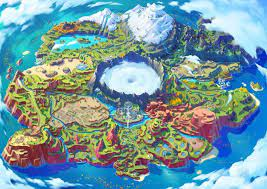

La próxima generación de Pokémon promete revolucionar la franquicia con novedades importantes. Estas son las filtraciones confirmadas hasta ahora:
Características principales

Starter tipo Dragón
Primera vez en la saga principal que los starters incluyen este tipo desde el principio.

Región inspirada en Canarias
Ambientada en un archipiélago con ecosistemas volcánicos y marinos.
Comparativa generacional
| Generación | Nuevos Pokémon | Innovación principal |
|---|---|---|
| IX (Escarlata/Púrpura) | 103 | Mundo abierto completo |
| X (2025) | 120+ | Combates cooperativos |
Opinión personal
Esta generación podría marcar un antes y después en la franquicia, especialmente con la inclusión de combates en tiempo real.